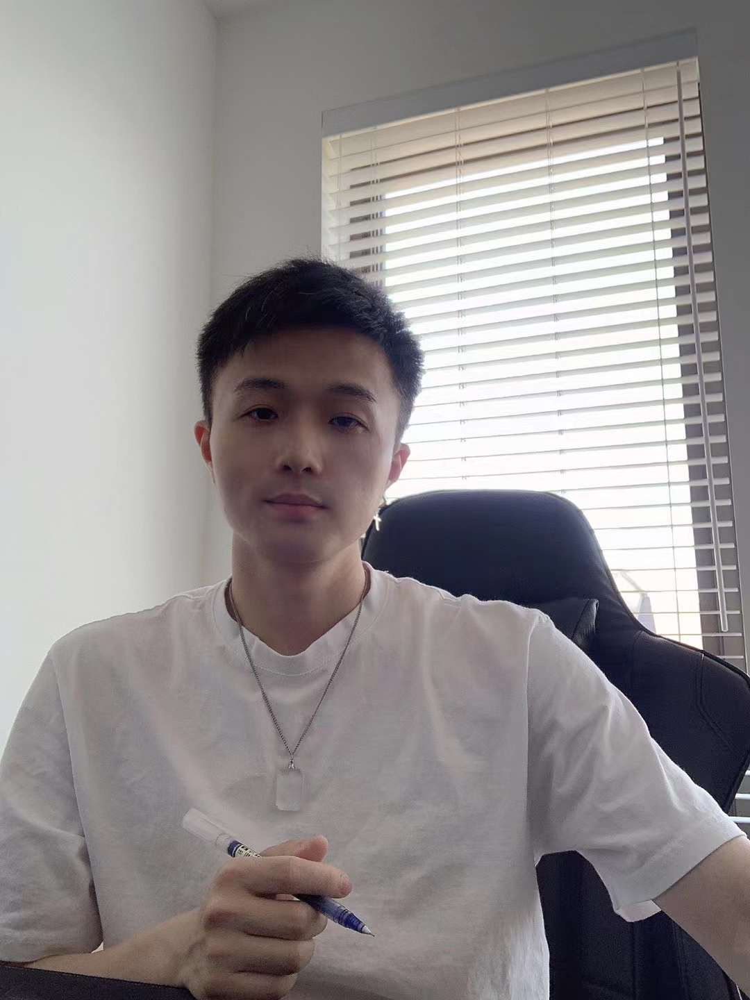

AI Research Scientist @ EMOTIV · Ph.D. in Computer Engineering @ Rutgers University
Completed his Ph.D. with Prof. Laleh Najafizadeh at the Integrated Systems & NeuroImaging Laboratory. Now an AI Research Scientist at EMOTIV.
Research focuses on foundation models, LLMs, multimodal learning, and scalable machine learning systems for biomedical and time-series data, spanning distributed training, self-supervised representation learning, local model deployment, and healthcare AI applications.
Jiazhen Hong is an AI Research Scientist at EMOTIV and holds a Ph.D. in Computer Engineering from Rutgers University. His research focuses on foundation models, large language models, multimodal learning, and scalable AI systems for biomedical and time-series data. At EMOTIV, he works on large-scale neural foundation models, distributed GPU training, long-context modeling, and transferable representation learning. His broader research spans healthcare AI, assistive technologies, human-centered AI, and locally deployed LLM-integrated systems. He has published in Scientific Reports, IEEE TKDE, IEEE TBME, NeurIPS, ICDM, EMBC, ISBI, and NER. Before Rutgers, he conducted machine learning and biostatistics research for early cancer detection at Harvard Medical School.